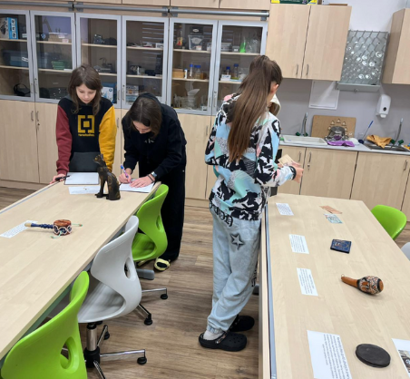
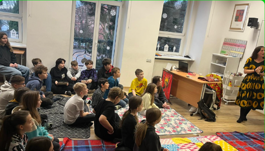

DOMŮ
ČTIVO
HRY
VIDEA
DOMŮ
ČTIVO
HRY
VIDEA
Den s afrikou
Mnozí z vás už pravděpodobně zapomněli, že byl nějaký den s Afrikou. Tak si ho pojďme připomenout. V sedmé třídě jste si mohli zkusit mnoho kvízů a získat sladké odměny. A určitě jste si také všimli ručně malované mapy Afriky, na níž jste si mohli procvičit své geografické znalosti.
CO NÁS ČEKALO V ODBORNÉ UČEBNĚ?

Předměty, fotografie a knihy o Africe, které škole zapůjčili naši rodiče. Ukázalo se, že v domácích sbírkách jsou uchovávány tyto zajímavosti: nedobytná skříňka, sošky božstev, bubínky, vkládací destička do rtu, africké plodiny, korálky a ozdobená tykev. Dále velkoformátové fotografie z egyptských hrobek a tři knihy cestovatelů Zikmunda a Hanzelky, které nám ukázaly Afriku druhé poloviny dvacátého století. A ti pozornější si v nich jistě všimli fotografie babičky a strýce Martina Kuneše.
A nakonec musím zmínit inspirativní návštěvu Josefíny Vrbové, která strávila celý rok dobrovolnickou prací v tanzanské soukromé střední škole. Přiblížila nám místní zemědělství, školství a situace z běžného života. Také jsme se dozvěděli více o vzniku Tanzanie a jejích přírodních krásách.
A kdo by se do Afriky chtěl na chvilku vrátit, pusťte si na Déčku Tarbíky.
-Podívat se na Tarbíky-